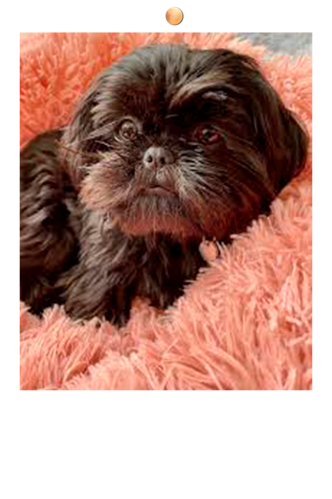

ESTRÉS EN TU SHIH TZU
Cuando un perro hace ejercicio es completamente normal que jadee porque es así cómo se refrigera, ya que ellos no sudan. Incluso en verano, cuando hace demasiado calor es normal que muestren un jadeo constante.
Pero si nuestro perro comienza a jadear y salivar sin motivo alguno, es porque está demasiado excitado, nervioso. Probablemente algo le está estresando y este es uno de los síntomas que muestran los perros con estrés.
Temblores causados por el estrés
¿Nunca has acudido al veterinario y tu perro ha comenzado a tiritar? Los temblores también pueden ser originados por situaciones de estrés en las cuales el perro se pone tan nervioso que de forma involuntaria comienza a temblar. Aunque no debemos confundir este síntoma con los clásicos temblores por frío o por dolor.
Caída de pelo abundante e injustificada
La ansiedad y el estrés canino producen una caída de pelo abundante y justificada por el aumento excesivo de hormonas derivadas del estrés como el cortisol. Todos sabemos que los perros hace muda de pelo un par de veces al año, pero si no coincide con esas fechas, el perro puede estar tirando pelo por estrés.
No es algo progresivo, simplemente de un día para otro o incluso en pocas horas, notaremos cómo el perro comienza a perder mucho pelo, como si estuviera en plena muda estacional. Este es uno de los síntomas más evidentes cuando hay situaciones de estrés.
Rigidez corporal
El estrés causa mucho nerviosismo y este a su vez impide a los músculos del perro relajarse con normalidad. Esto origina una rigidez extraña en el perro que le impide moverse con normalidad en las ocasiones más extremas.
Un perro continuamente estresado estará siempre tenso, sus músculos no podrán relajarse y eso producirá que se muestre muy rígido, anormalmente cómo si tuviera alguna enfermedad que le impida moverse, pero como antes he mencionado, esto solo ocurre en los casos más extremos, por lo que será conveniente llevarle al veterinario antes de alcanzar este punto.
Falta de concentración y nerviosismo
Mirara constantemente hacia todos los lados, no prestar atención a nuestra llamada o a cualquier orden que le demos, mostrarse inquieto sin saber hacia donde ir o intentar esconder bajo nuestras piernas son síntomas muy evidentes e estrés en perros.
En estas situaciones no debemos regañar a nuestro perro pero tampoco acariciarlo, porque si le mimamos cuando está nervioso, interpretará que es bueno estar así e intensificaremos el problema sin saberlo.
Comportamientos no habituales
El estrés puede derivar en ansiedad en nuestra mascota, por lo que si comienza a romper cosas en casa o llorar cuando le dejamos a solas probablemente se trate de esta última patología.
Realizar movimientos repetitivos sin sentido, lo que se conoce cómo trastorno obsesivo compulsivo, también es una señal de un exceso de estrés en perro. Todos estos síntomas, nos indican que nuestro perro tiene un problema.
¿Cómo puedo solucionar el estrés de mi perro?
Una de las principales causas de estrés en perros es la falta de ejercicio, la imposibilidad de poder gastar el exceso de energía que poseen. Por eso es recomendable dar largos paseos con nuestro perro a diario e incluso llevarlo a correr.
La soledad también causa estrés y ansiedad a los perros, son animales de compañía no “cosas” que puedan estar encadenadas o encerradas todo el día. Ellos necesitan estar con nosotros, su familia. Pero es importante en las primeras etapas de vida del animal, acostumbrarle a estar ratos solo, porque si no con el tiempo desarrollará ansiedad por separación.